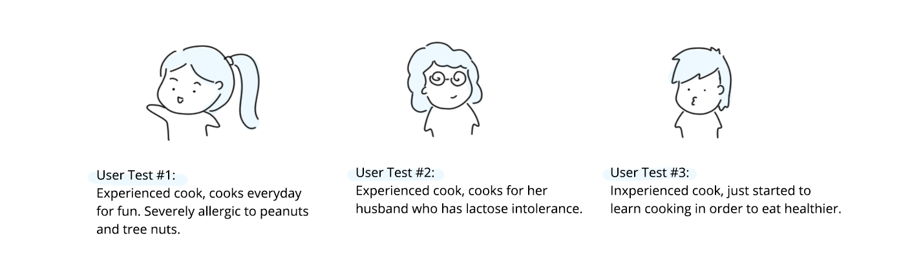
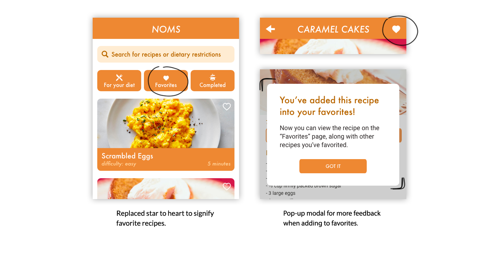
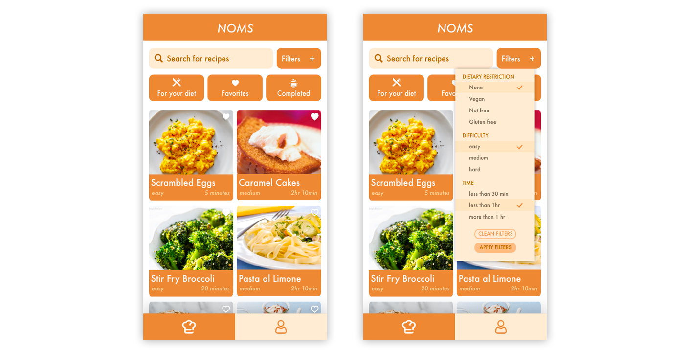

Understanding Dietary Restrictions
After interviewing some people with strict diets about their
experiences with finding recipes and cooking in the kitchen,
we isolated some major pain points:
- Some found it embarrassing or inconvenient to have a
strict diet— it would restrict them from eating out with
friends or letting others know about their diets
- It’s risky to eat outside because there is a risk of
cross-contamination in other kitchens
- Checking ingredient labels for every packaged food item
becomes tedious and annoying
- It was difficult to find a variety of food options when
they first adopted the diet.
- Finding diverse recipes that catered to specific
diets was difficult, but there are lots of replacement
options available.
The Problem
Individuals with dietary restrictions do not eat and cook with the
same level of ease and comfort as those without dietary restrictions.
Ideating
We came up with two ideas to allow those with dietary
restrictions to eat and cook more comfortably.
(1) Shared Pantry:
Users would be able to request and obtain different ingredients
from other users in the same area. Not only would users be able
to obtain specific ingredients that they might lack in the
kitchen, they would also be able to meet new friends with
similar diets, share cooking insights, and gain a diet-friendly
community.
(2) Recipe Conversions:
Users would be able to find recipes without worrying about dietary
constraints. The app would convert certain ingredients to their
respective replacement options for each diet.
First Iteration
We decided to stick with the Recipe Conversion idea, since the Shared
Pantry idea relies too heavily on users to be proactive in sharing
ingredients. As we thought more about a shared pantry, the vision
was too optimistic to carry out. Not many people would willingly
offer up their eggs for someone else.
With the recipe conversion idea in mind, we created Noms.
Noms is a cooking app that provides home cooks with the ability
to swap ingredients within recipes to create a new recipe catered
to their specific diets. Like a traditional cooking app, the app
allows cooks to discover different recipes and learn through the
specific instructions, but through a convenient click of a button,
those cooking with dietary restrictions can now also enjoy the same
recipes with alternate ingredients.

User Testing
To ensure that our designs were usable, we conducted user tests to
understand how users interact with our app. We asked our users to
complete a series of tasks that reflected the functionalities in
our app:
Look at a recipe and add it to your favorites
Change your dietary restriction to Vegan
Look for a vegan brownie recipe and walk through the steps until you finish
Locate all the recipes you’ve completed before
Look at your favorited recipe and find a lactose free version of it
We tested three home cooks of different skill levels who cook for
a specific diet.

We obtained some good feedback— all three of our users thought
that Noms is an interesting idea that allowed people of different
diets to have a centralized location for recipes.
Redesign
We found three big usability errors from our user testing:
(1) Favorites Icon
All three users found that the favorites button, or the star icon,
was confusing.
We decided to change the star icon to a heart icon to reflect the
idea of “favorite recipes” better. Most people correlate “favorite”
to having positive and strong feelings for something, and this is
typically represented through a heart shape.

(2) Marking a Recipe as Complete
Two out of three users didn’t complete the actual recipe by
going through each and every step.
We speculate that this issue was because home cooks of
different skill levels need different levels of guidance
in terms of recipes. Those with more experience can complete
a recipe with no extra help, but for inexperienced cooks, visual
aids through each step would make the process a lot smoother.
To solve this issue, we added a “complete recipe” button on the
recipe overview page so that home cooks can mark a recipe as
complete without walking through individual steps.

(3) Finding a Recipe
All of the users scrolled for a while to see all the
recipes before choosing a recipe on the home page.
To fix this issue, we changed the layout of our home page to
declutter it. We simplified the recipe cards, giving just
enough information for users to want to click into it. After
clicking into each card, then we displayed more information
about the recipe.

A/B Testing
Some users complained about the amount of scrolling, so we came up
with a grid design for the recipes on the home page. However,
we weren’t too confident in the redesign— How do we want users
to search for specific recipes? We wanted to compare the two
versions of the home page:
Version 1

Version 2

Search with a filter, choosing between different diets, favorite
recipes, and/or completed recipes. Recipes are displayed in a
grid, where many more recipes are shown at once.
From our chi-square test and informal feedback, we learned:
Users prefer the grid layout in version 2 since it requires less
scrolling and gave users more control over what they saw
Users spent less time to complete the task in version 2
On average, users clicked more pages in version 1, likely because
they clicked the wrong recipes
The search bar in version 1 was not comprehensive enough. Users
typed “vegan brownie” and it came up with no results
Users preferred having a search bar to search for specific
ingredients or recipes faster
Final Prototype
Through our tests and informal feedback, we decided to combine the
two options. We would incorporate a search bar and a filter option
while displaying the recipes in a grid format. We hope that this
version would reduce the chance of error of clicking into a wrong
recipe, while ensuring that users can find recipes more efficiently.

At the poster session, our team received an award for Best
Problem Statement. We also received valuable feedback from
design professionals about our project.

Future Plans
Future plans involve conducting more tests on a different user
base. It was brought to our attention that some older users who
struggle with diabetes might prefer to see nutritional information
or prefer a bigger card layout. Conducting additional tests on
senior users or people with different dietary restrictions would
allow us to make Noms more friendly for its appropriate user group.